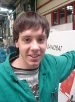

Caso práctico

APARDOA es una empresa dedicada al mecanizado de pieza unitarias. Sus clientes son empresas que necesitan mecanizar prototipos y pequeñas modificaciones de piezas ya mecanizadas, también dan servicio a empresas del sector de maquinaría que precisan piezas para repuesto de componentes y para substituir piezas rotas, sobretodo en máquinas-herramientas CNC.
APARDOA dispone para su actividad de maquinas CNC, su sección de tornos se compone de tres tornos de diferentes capacidades, la sección de fresadoras dispone de tres fresadoras. En taller de APARDOA trabajan un equipo formado por: Jacinto; entro a trabajar a los 14 años como aprendiz, al cabo de años conoce las máquinas y su estado a la perfección, amén de los procesos de mecanizado. Hace unos años sustituyo al jefe de taller tras su jubilación.
Manu y Toño acaban de incorporarse a la empresa como operarios al terminar la formación profesional. Ambos trabajan con autonomía tanto en torno como fresadora de tipo convencional. En máquinas dotadas de CNC carecen de experiencia, los pocos conocimientos teóricos que recibieron en sus estudios ya están olvidados. Manu y Toño tienen suerte de tener a Jacinto como jefe de taller, que reúne al equipo para plantear los pasos que hay que seguir en tornos y fresadoras CNC, como por ejemplo, los modos de operación; simulación en vació, empleo de útiles de verificación y control, corrección de las desviaciones de las piezas mecanizadas, Correcciones de herramientas, de saltos de decalaje, de trayectorias, de velocidad y avance, identificación y resolución de problemas...etc
APARDOA dispone para su actividad de maquinas CNC, su sección de tornos se compone de tres tornos de diferentes capacidades, la sección de fresadoras dispone de tres fresadoras. En taller de APARDOA trabajan un equipo formado por: Jacinto; entro a trabajar a los 14 años como aprendiz, al cabo de años conoce las máquinas y su estado a la perfección, amén de los procesos de mecanizado. Hace unos años sustituyo al jefe de taller tras su jubilación.
Manu y Toño acaban de incorporarse a la empresa como operarios al terminar la formación profesional. Ambos trabajan con autonomía tanto en torno como fresadora de tipo convencional. En máquinas dotadas de CNC carecen de experiencia, los pocos conocimientos teóricos que recibieron en sus estudios ya están olvidados. Manu y Toño tienen suerte de tener a Jacinto como jefe de taller, que reúne al equipo para plantear los pasos que hay que seguir en tornos y fresadoras CNC, como por ejemplo, los modos de operación; simulación en vació, empleo de útiles de verificación y control, corrección de las desviaciones de las piezas mecanizadas, Correcciones de herramientas, de saltos de decalaje, de trayectorias, de velocidad y avance, identificación y resolución de problemas...etc